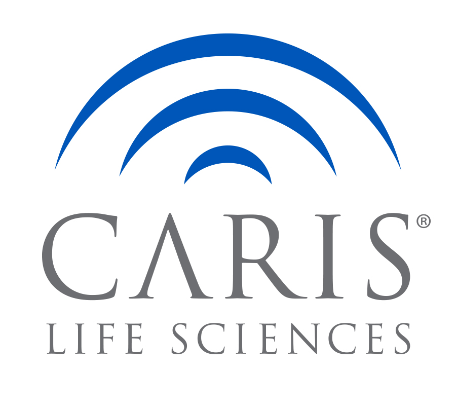

The Cancer Evaluation and Intelligence Center
Sobald aus dem Verdacht auf Krebs eine sichere Diagnose geworden ist, folgt der Ablauf regelmäßig einem gewissen Muster. Die Grafik stellt den Ablauf sehr vereinfacht dar: Graphic desicion tree Für den behandelnden Arzt nimmt insbesondere die aktuelle Datenlage zu Tumorbehandlungen einen wichtigen Stellenwert ein. Zudem orientiert sich ein Arzt regelmäßig an den sogenannten Leitlinien:.
So hilfreich eine Navigation anhand der gewissenhaft erarbeiteten Leitlinien für den Arzt angesichts eines sehr komplexen Krankheitsbildes ist, so sehr muss darauf geachtet werden, nicht in blinde Schemata zu verfallen. Denn:
Was bei Patient A erfolgreich angewendet wurde, muss bei Patient B trotz augenscheinlich gleichlautender Diagnose noch lange nicht funktionieren. Denn das Ansprechen von Therapien hängt von vielen Faktoren ab. Auch Studien können mithin nur mit einer gewissen Wahrscheinlichkeit einen therapeutischen Weg aufzeigen.
Ziel muss es daher sein, die Wahrscheinlichkeit des Ansprechens eines Medikaments möglichst exakt zu ermitteln um jenen Therapien den Vorzug zu geben, die mit hoher Wahrscheinlichkeit beim Betroffenen anschlagen. Andernfalls geht wertvolle Zeit und Kraft verloren.
CEIC bietet Patienten daher direkten Zugang zu Testverfahren, um die entscheidenden Informationen aus dem Tumormaterial auszulesen, die eine effektive Therapieentscheidung ermöglichen.
Die Vorteile auf einen Blick:
Anwendbar auf alle soliden Tumore)
Ausschluss wenig erfolgversprechender Therapien (Prädiktion)
Die Therapieentscheidung erhält damit eine neue, evidenzbasierte Grundlage zur Entscheidung und kann unnötige Nebenwirkungen verhindern
Die bestmögliche Therapieoption weist das beste Nutzen-Risiko Verhältnis auf. Die Testergebnisse zeigen klar strukturiert auf, welche Maßnahmen kaum Aussicht auf Erfolg oder welche Maßnahmen vielversprechend sind
Das Testresultat greift bei dem individuellen Eigenschaften des Tumors an und nicht bei generellen Studienergebnissen
CEIC führt mit allen entscheidenden Stellen die Kommunikation. Mit dem Patienten, Ihrem Arzt und hilft bei Kostenübernahmeanträgen mit Ihrer Krankenkasse
Bei Bedarf helfen wir den passende Arzt oder Klinik für Ihre Situation zu finden
Unser Serviceversprechen beinhaltet, Sie als Patient von der ersten Sekunde an zu begleiten. Nehmen Sie unverbindlich mit uns Kontakt auf um Ihren Fall zu besprechen und die vorhandenen Optionen genau zu verstehen.
CEIC ist eine private Einrichtung führender Diagnostikträger.

CARIS Lifescience
CARIS Lifescience mit Sitz in Dallas, USA ist der weltweit
führende Technologieträger für umfassende molekulare
Diagnostika. CARIS ist bekannt für seine hohen
Qualitätstandards und weist für das Labor die höchste Zertifizierungsstufe auf:
CAP, CLIA, NYS und ISO15189 Zertifikate Weltweit wurden bereits über 70.000 Patienten mit dem CARIS Technologien
Mehr Infos finden Sie auf der offiziellen Homepage:
Therapyselect, Deutschland
Der zweite Technologieträger ist das deutsche Unternehmen Therapyselect
aus Heidelberg. Therapyselect ist spezialisiert auf die Resistenztestungen von
Medikamenten bei soliden Tumorerkrankungen und hat weltweit bereits mehr
als 150.000 Testungen durchgeführt. Das high-end Labor wirkt seit Jahren beid
er aktiven Forschungsarbeit auf dem Gebiet der Prädiktiven Diagnostika um
Patienten dabei zu helfen, eine auf Ihre individuellen Bedürfnisse
zugeschnittene Therapie zu erhalten.
CEICs product portfolio has many advantages for institutional health care providers